The first screen of WinScore appears as follows:
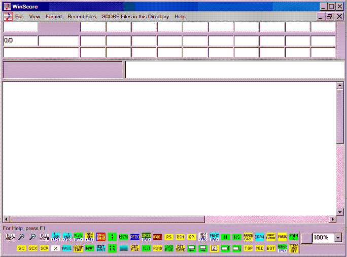
If all these dialogue boxes do not appear, click on VIEW at the top of the screen. Then click on TOOLBARS to activate the various boxes. The boxes may be moved to any desired positions.
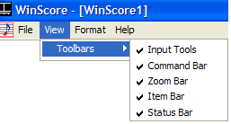
In the top example, the highest boxes will contain the parameter values of an item in edit mode.
Type e to remove this box. Typing e again will restore the box.
The gray box below will contain messages and instructions from the program.
Typed commands will appear in the right white box.
To get a pre-existing data file you may click on the conventional Windows "File" or type G followed by the file name. If you do not include the name extension (usually .MUS) it will assume whatever extension was last used. If you already have some music displayed, you will be asked if you wish that it be replaced by new data. If you type GM (=get more), you will be asked for a staff offset. Thus several separate files may easily combined. Please note that the name of the original file will persist as the name of the combined files.
GMR n = get more (a file named "n") and place it on the right (recto) page.
GML n = get more and place the file on the left (verso) page.
Before using this command be sure to move to the right any
data on the basic position. The command PGR will move
data back and forth between the verso and recto positions.
GMN = get more, put the file with the Next alphabetical name on the right page.
GMB = get more, put the file with the next Back name on the left page.
(Also see below re. RS, RSM, GP, NX, NB and LAST.).
To save a file you may click on the Windows "File" box or type SA followed by s name. If no extension is given, the last used extension is assume If you type SM (=Same Name), no further prompts will be given. The file will be saved with its current name. There is a toolbar box that accomplishes this action.
Typing SNX will save whatever is on the screen to a file with last character in the name raised to the next alpha/numeric level. If name were AAAAA.MUS, the new name would be AAAAB.MUS. OPERA09.MUS would be saved as OPERA10.MUS, etc. (Note that SYM9.MUS would raise to SYN0.MUS, etc.)
Typing SNB (=save next back) would save a file with the current name of ETUDE10.MUS to the name ETUDE09.MUS, etc.
Following are explanations of the bottom Toolbar Buttons:
= reduce image to fit screen; increase size to fit screen width.
= zoom in or out 1-2%.
= vertical move to top, middle or bottom or page.
Also <ctrl.><home> moves to top, <ctrl><end> moves to bottom.
<alt><T> moves to top, <alt><M> moves to middle, <alt><B> moves to bottom.
Or you may type TOP, MID, or BOT. TOPR moves to top, right side; TOPM moves to top middle, etc.
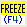
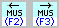
Typing NX, hitting F3, or clicking on the right toolbar button will bring up the next file, in alphabetical order, found in the current directory. NB, F2, or the left button brings up the next back file.
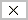
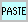
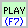
= move to Group Edit Toolbar.
= move to Items Toolbar (notes, rests, clefs, etc.).
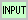
= save current page with same name. (SM)
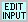
= redo after UNDO; undo various group edits; undelete last deletion. (<ctrl>A,Z,U)
 = restore. If, while editing, you mistakenly EXIT when you intended to COPY,
clicking
= restore. If, while editing, you mistakenly EXIT when you intended to COPY,
clicking
on this box will restore the original state of the item while retaining the copy. (<ctrl>R)
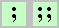
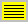
= restart program; restart with same named file; get previous file. (<alt>R,N+++,G)
= read commands from last text file read in.
= when starting program, get last file used; get automatically saved file.
When you open the program, clicking on the <Last File> button or typing LAST will bring up whatever was last in the program's memory.
Work being done is automatically saved from time to time under the name "!SAVE.MUS." Clicking on this button, or typing GSV or G !SAVE.MUS will replace whatever is currently on the screen.
= edit last item entered or edited.
To edit the very last item in the page's data list, type II.
= go to print menu. (PRI)
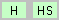
= put up spacing scale; remove scale; put up vertical scale.
Clicking on the SC button or typing SC will put the horizontal spacing scale above the highest staff present on the screen. The scale is in SCORE units, 0 - 200. If you wish to have the scale on a lower staff you must type SC n where n is the staff number. To get the scale in inches, type SCI. For centimeters, type SCC. SCV creates the vertical scale in inches. For centimeters, type SCVC. (<alt>C)
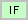
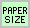
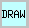
= go to page layout or part extraction routines. (LAY, <alt>L; PTS,<alt>A)
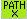
= get list of recent directory path settings. (PATHX, <ctrl>0)= move screen image; <Z> returns to normal.
The four arrow keys will move the image in small steps. For larger moves, the <Home> moves to the left, the <End> key moves to the right, the <Page Up> moves up, the <Page Down> moves down.
= recompute screen image (zoom), size 2 on/off. (<alt>Z)
Clicking the right mouse button (when not in edit mode) is the same as clicking on this box.
You may also type Z n, where n is the zoom factor. 1 = 100%, 2.5 = 250%, etc. The current percentage will appear in the small zoom box, usually at the top of the screen.